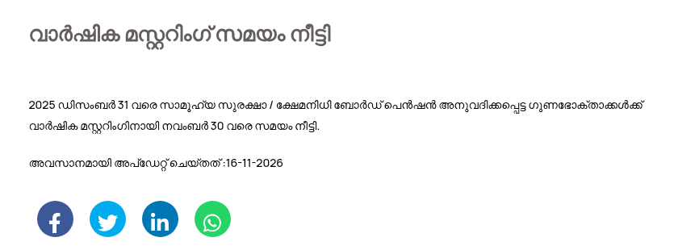

Kerala pension mustering extended to 30 November 2026: who the notice covers
Kerala's official web portal says annual mustering has been extended to 30 November 2026 for beneficiaries whose social-security or welfare-board pension was sanctioned by 31 December 2025. This is a deadline notice. No biometric mustering was performed for this guide.
What changed?
The Government of Kerala's notice, updated 16 November 2026, extends the annual-mustering time to 30 November. An older official notice, updated 29 September, had named 31 October. Use the newer notice for the beneficiary group it names.
Who does it cover?
The wording is specific: beneficiaries sanctioned social-security / welfare-board pensions by 31 December 2025. It is not a blanket instruction for every pensioner, every service pension or every Treasury pension. If you are unsure whether your pension is in this group, check with the office or board that handles it before relying on this date.

Where is biometric mustering done?
The official Jeevan Rekha website describes Aadhaar-based biometric authentication for pensioners at Akshaya Kendras. Arrange the visit with an Akshaya Kendra and confirm the requirements for your pension before going. This article does not establish a self-service, at-home biometric method.
Is it free?
The two official pages used for this notice do not state a current mustering fee. We have not verified that it is free. Ask the Akshaya Kendra about any applicable charge before the service. No fee amount, free-service claim or home-visit price is given here.
What should you do now?
- Read the linked official notice and check whether its pension category and sanction-date scope match yours.
- Contact an Akshaya Kendra to confirm the biometric-mustering arrangements and required documents for your pension.
- If covered and still needing annual mustering, arrange to complete it by 30 November 2026. Keep any acknowledgement you receive.
- If your case needs special handling, contact the pension office or welfare board. This notice does not verify exemptions or an alternative procedure.
What AiCoN checked
On 17 November 2026, we read the official extension notice and Jeevan Rekha's public description, and opened both pages in a browser. No biometric mustering was performed. We did not enter Aadhaar or pension details, inspect a beneficiary record, or contact a Kendra. We have not verified fees, exemptions, home visits or the consequences of missing the date. This is not a guarantee of pension payment.
Official sources
- Kerala Government: annual mustering time extended (updated 16 November 2026).
- Jeevan Rekha: public overview and Akshaya biometric route (checked 17 November 2026).
- Earlier October-deadline notice (29 September 2026, historical context only).
Explainer by AiCoN - not a government publication. Recheck the official notice for any later change.